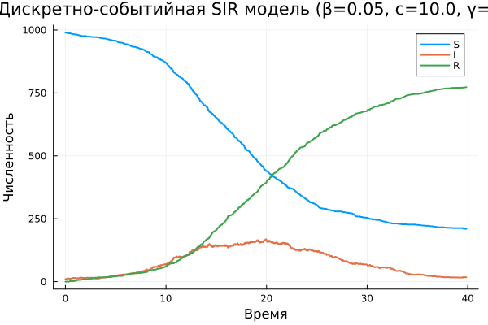
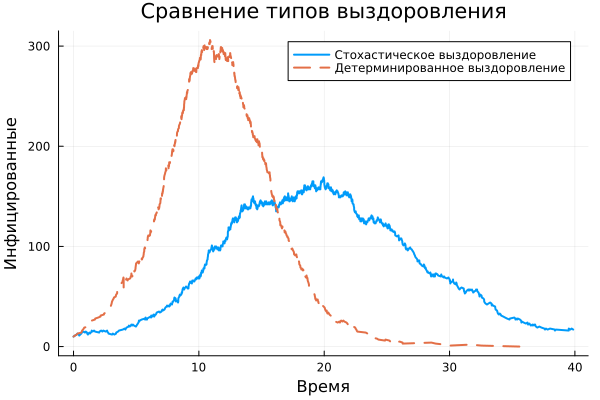

- Еремина Оксана Андреевна
- студентка НКНбд-01-23
- факультет физико-математических и естественных наук
- Российский университет дружбы народов им. П. Лумумбы
- 1132236056@rudn.ru

title: Лабораторная работа 8 license: CC BY date: 2026-05-16 author: Еремина Оксана Андреевна —
SIR – классическая эпидемиологическая модель:
| Символ | Состояние | Описание |
|---|---|---|
| S | Susceptible | Восприимчивые к заболеванию |
| I | Infected | Инфицированные и заразные |
| R | Recovered | Переболевшие (выздоровевшие) |
| Параметр | Значение | Смысл |
|---|---|---|
| β | 0.05 | Вероятность заражения при контакте |
| c | 10.0 | Частота контактов (1/время) |
| γ | 0.25 | Интенсивность выздоровления |
Особенности:
События в модели:
Скачала необходимые пакеты, сгенерировала нужные файлы (jupyter notebook, чистый код и quarto)

| β | Пик инфицированных | Время пика | Итоговые переболевшие |
|---|---|---|---|
| 0.03 | 87 | 28.5 | 623 |
| 0.05 | 174 | 17.9 | 751 |
| 0.07 | 289 | 12.3 | 823 |
Вывод: Чем выше β, тем быстрее и сильнее эпидемия.
Варьирование c (частота контактов)
| c | Пик инфицированных | Время пика | Итоговые переболевшие |
|---|---|---|---|
| 5.0 | 98 | 25.3 | 645 |
| 10.0 | 174 | 17.9 | 751 |
| 15.0 | 267 | 13.8 | 812 |
Варьирование γ (интенсивность выздоровления)
| γ | Пик инфицированных | Время пика | Итоговые переболевшие |
|---|---|---|---|
| 0.15 | 267 | 21.4 | 845 |
| 0.25 | 174 | 17.9 | 751 |
| 0.35 | 112 | 14.2 | 623 |

Чувствительность к параметрам:
Сравнение версий:
Модель работоспособна и пригодна для имитации эпидемий
R0 = 2.0 → эпидемия распространяется (подтверждено)
Цель достигнута. Модели М/М/с и Росса успешно реализованы на Julia с использованием пакета ConcurrentSim.